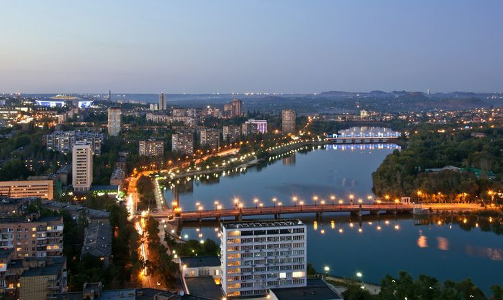

Донецк-город на востоке Украины, на реке Кальмиус.
Согласно законодательству Украины — город районного подчинения в Донецкой области.
С апреля 2014 года контролируется непризнанной Донецкой Народной Республикой и рассматривается ею как столица.

Пятый город Украины по количеству населения, численность которого на 1 января 2014 года составляла 950 372 человек.
Городская символика была утверждена 27 сентября 2004 года решением № 13/5 Донецкого городского совета. В решении утверждались герб Донецка и флаг Донецка.
С подробностями города вы можете ознакомиться по следующим ссылкам: